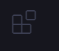

O visual studio code ou popularmente chamado vscode, é uma ide(Ambiente de Desenvolvimento Integrado) ela é uma ferramente gratuita e facil de se usar pois possui funçoes ambas serão mostradas logo abaixo
A primeira tela que você vem quando inicia o visual studio code é uma tela de boas vindas com uma lista de tarefas para você fazer, a primeira coisa que te recomendo fazer é ir na ultima opção do lado com esse icone abaixo:
Você vai nela ou clique nesse link
E instala essa extensão, com isso você terá seu vscode em português e terá como evouluir na linguagem mais rapido e simples